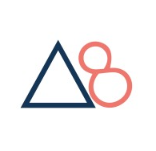

As a conscientious postgraduate law student with a focused specialization in corporate law and a
proficient understanding of cloud computing and the Python programming language, I am dedicated
to upholding the utmost professional standards. My legal education has honed my intellectual and
analytical capabilities, yet my genuine enthusiasm lies in the realms of computing and
programming.
I contribute to professional environments with a collaborative mindset, showcasing exceptional
interpersonal and technical skills alongside a robust work ethic. In pursuit of a career in
computing, I am actively seeking a position that not only allows me to broaden my experiential
horizons but also facilitates the development of new practical skills.
3rd March 2023 - 24th March 2023

• Evaluated client needs
• Worked collaboratively to synthesize data
• Ran online meetings with business owners
• Analyzed evidence and presented recommendations
• Developed problem-solving skills to determine best practices to adopt
• Demonstrated effective teamwork and coordination with multiple contributors
• Worked through a comprehensive five-module entrepreneurial course
• Conducted intensive research projects focused on various countries, events, and the latest
trends.
• Ran daily online meetings with business owners to discuss project progress, provide updates,
and coordinate activities with team members.
• Developed research, presentation, marketing and sales skills to deliver relevant information
to clients
• Demonstrated effective teamwork and coordination with mentors.

• Back Of House / Front Of House Member: handling heavy machinery in the Kitchen & handling money
at cashier
• Worked collaboratively with other staff members
• Ran Food to customers & Resolved customer needs
• Developed time management, multi-tasking, adaptability and customer service skills
• Demonstrated effective teamwork and coordination in the Kitchen
Basic python programs to effectively demonstrate my understanding of fundamental concepts
Deployed and hosted a highly available applications on AWS infrastructure using EC2,
RDS, Route 53, ASG and VPC, S3, Lambda, DynamoDB, Cloudfront and API.
Cloud Solutions Architect Associate Certification, Python Code Mastery Certification